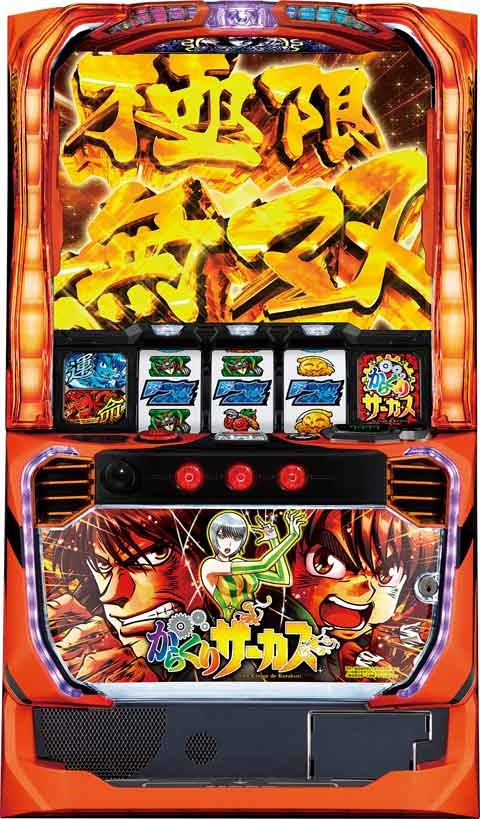
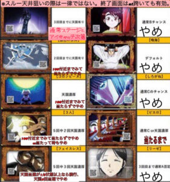
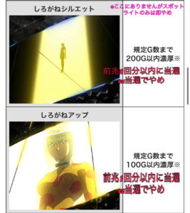
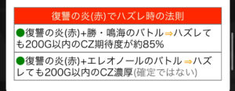

Lからくりサーカス

[天井情報］ CZ天井(液晶1200)実ゲーム数900gくらい？ AT間天井 2500g CZスルー回数天井4スルーで次回AT確定 (4スルーは期待値10000円超え？)
狙い目
リセット（設定変更）狙い
設定変更後の朝イチ台を狙う立ち回りです。
- 打ち方: 0Gから打ち始め、天国モードのゾーンである80G付近の前兆終了までを狙います。
- やめ時: G数短縮などの特殊な状況でなければ、液晶61Gで煽り演出が発生しなかった場合にやめます。
- 終了画面が出た場合の押し引き:
- ピエロ: CZかATに当選するまで続行。
- コロンビーヌ、銀色の女神: 天国モードを否定するまで様子見。
- フェイスレス: 天国の権利が「残り3回中1回」になるまで続行。
- リーゼロッテ: 100G台の前兆発生まで様子見（前兆がなければAT当選まで）。
補足: 一台あたりの期待値は約300円前後とされますが、低設定がメインの店舗では期待値が下がる可能性があります。ベース設定が高い店舗ほど有利です。
天井狙い（CZ間G数・スルー回数）
CZ（機械仕掛けの神）間のハマりやスルー回数を基準にした立ち回りです。
- 天井短縮の恩恵: 液晶1100Gを超えてCZに当選し失敗した場合、次回の天井が300G以内（多くは250Gまで）に短縮されます。この恩恵はATを挟んでも有効です。（有利区間リセット時は無効）
- ポイント: 液晶1000G付近からの前兆で最終的に1100Gを超えて当選した場合も、天井短縮は有効となる可能性が高いです。
- スルー回数別の狙い目:
- 0スルー: 液晶570G〜（非等価交換なら670G〜）
- 1スルー: 液晶550G〜（非等価交換なら620G〜）
- 2スルー: 液晶370G〜（非等価交換なら500G〜）
- 3スルー以降: G数を問わずAT当選まで。
- 2スルー時のATまで続行条件:
- AT間で1200G以上ハマっているCZ即やめ後(天国抜け直後は打たない)。
- 鳴海ステージからスタートした場合。
ゾーン狙い
特定のゲーム数区間をピンポイントで狙う立ち回りです。
- 上位AT終了後: 0Gから天国ゾーン（50G〜100G過ぎの前兆）終了まで。
- CZ2スルー時: 0Gから天国ゾーン終了まで。
鳴海ステージスタート狙い
AT・CZ終了後のステージに注目する立ち回りです。
- 狙い方: 鳴海ステージからスタートした場合、液晶200Gのゾーンまで打ちます。基本的に250Gで前兆がなければやめます。
- 補足: AT/CZ終了後1G目に鳴海ステージ(スタート)滞在を狙います。実践上液晶20G以内の鳴海ステージは鳴海ステージスタート濃厚です。
- モード示唆による押し引き:
- モードC期待度アップ: 100Gゾーンで前兆がなく、200Gゾーンで前兆が発生してスルーした場合。モードCの可能性が上がるため当選まで続行します。
- モードBの可能性アップ: 100G、200Gゾーン共に前兆がなかった場合一旦やめも視野。
重要な示唆演出と立ち回り
AT/CZ終了画面
CZ示唆の終了画面は次回のモードや残り天国の権利回数を示唆し、ATを跨いでも有効です。

- ピエロ
- 示唆: 通常C or 天国濃厚。
- 立ち回り: 次回当選まで続行。
- フェイスレス
- 示唆: 5回中3回が天国濃厚。
- 立ち回り（次回AT/CZまで続行）: 天国の権利が2回以上残っている場合（3/5, 2/4, 3/4など）や、天国当選が確定している場合（3/3, 2/2, 1/1）。
- 立ち回り（天国ゾーンでやめ検討）: 天国の権利が残り1回になった場合（1/3, 1/2）。
- ※例外: 「1/2」の状況でもAT間2スルー中ならAT/CZ当選まで続行。
- コロンビーヌ
- 示唆: 天国濃厚。
- 立ち回り: 天国ゾーン（80G付近の前兆）終了まで。
- 銀色の女神
- 示唆: 2回中1回が天国濃厚。
- 立ち回り: 天国ゾーンまで回し当たらない場合AT間CZが0スルーと1スルーなら一旦やめ出現の台を記録して200g付近から拾い直して打ちます。AT間2スルーからは天国当選するまで打ちます。
- 3人集合
- 示唆: 5回中2回が天国濃厚。
- 立ち回り: 天国ゾーンまで回す。天国で当選した場合、そのAT/CZ終了後にやめ。
- 腕
- 示唆: 3回中1回が天国濃厚。
- 立ち回り: 基本的に即やめ。他の強い要素があれば続行を検討。
- 勝（単体）、しろがね、デフォルト（鳴海）、リーゼ
- 示唆: それぞれモード示唆があるが、追う価値は低い。
- 立ち回り: 即やめ。
アイキャッチ演出（しろがね示唆）

ステージチェンジ時に発生するアイキャッチで次回当選G数を示唆します。
- しろがねシルエット
- 示唆: 200G以内の当選が濃厚。（前兆2回以内にCZ当選濃厚）
- 立ち回り: CZ/AT当選まで続行。
- しろがねアップ
- 示唆: 100G以内の当選が濃厚。（前兆1回以内にCZ当選濃厚）
- 立ち回り: CZ/AT当選まで続行。
からくりレア役規定回数示唆
レア役成立時の演出でCZやATまでの残り回数を示唆します。
- カウンター表示: 強チェリー、チャンス目、スイカの「残り〇回」表示は、規定回数まで打つ価値あり。
- ボイス演出:
- 「近づいています」: 残り3回以内。このボイス後に対象役を2回引いたら、もう1回引くまで続行。
- 「次で決めましょう」: 残り1回以内。対象役をもう1回引くまで続行。
- ※注意: 強チェリーで発生しても「チェリー」という括りのため、弱チェリーが残り1回の可能性あり。
- 会話演出:
- 白セリフ: 対象役の残り5回以内を示唆。
- 青セリフ: 対象役の残り3回以内を示唆。
- 幕間煽り: スイカの残り3回以内を示唆。複数回発生すれば信頼度アップ。
モードC濃厚演出（紫セリフ）
会話演出で以下の紫セリフが発生した場合は、モードC濃厚のためAT当選まで続行します。
- 勝: 「うん、殺しちゃうんだ今までの….」
- 鳴海: 「私に許されたことは、ただひとつ…」
その他の狙い目と注意点
激情ジャッジ残り1回でのAT終了台
即前兆からATに当選した場合、残り回数が引き継がれるため、即前兆の確認を推奨します。
運命の一撃後
終了時に歯車のエフェクトがなければ有利区間リセットの可能性が高いです。その場合は天国を確認します。
「復讐の炎（赤）」演出について
ガセ報告も多いため、この演出単体で追う必要はありません。スルー回数が重なっているなど、他の要素と複合した場合の判断材料としましょう。

やめ時の基本
天井短縮時: 液晶1100G超えの恩恵を受けた後は、次回のCZ当選まで続行。
AT終了後: 幕間チャンスの結果を確認後、1G回してアイキャッチ等の示唆がなければやめ。
天国フォロー: 上位AT終了後、または終了画面の示唆で天国をフォロー。
参考元
基本情報
- メーカー: SANKYO
- 機械割: 97.5% 〜 114.9%
- 導入開始日: 2023年07月03日（月）
- ゲーム性概要: レア役やゲーム数消化で突入するCZをクリアしてAT当選を目指すゲーム性。ゲーム数加算の特化ゾーンも存在する。 ATは差枚数管理型で、純増約2.8枚/Gの基本AT「からくりサーカス」と純増約7.6枚/Gの上位AT「超からくりサーカス」が存在。初当り時は基本ATから始まり、レア役やゲーム数消化で突入する「激情ジャッジ」を3回成功させると、「運命の一劇」の権利を獲得。「運命の一劇」はAT終了時に突入し、成功すれば上位AT確定だ。「激情ジャッジ」成功4回目以降は「運命連鎖」を抽選。「運命連鎖」成功時はAT終了を待たずに上位ATへ直行するので、「激情ジャッジ」の成功が大量出玉獲得へのカギとなる。


打ち方
打ち方・小役
通常時の打ち方（小役狙い）
「最初に狙う絵柄」 左リールにBARを狙う。

「チェリー停止時」
成立役…弱チェリー／強チェリー

「下段BAR停止時」
成立役…ハズレ／リプレイ／ベル／チャンス目A／チャンスベル

「スイカ停止時」
成立役…スイカ／チャンス目B

「レア役の停止形」

AT中の打ち方
押し順のみのナビと色＋押し順のナビの大別して2種類が存在。ナビナシ時は通常時と同様の小役狙いで消化しよう。
［押し順ナビ］

［色＋押し順ナビ］

変則押しはNG
押し順ナビ非発生時は左リール第1停止での消化を推奨する。

中リール狙え
リールサンド目停止で差枚数を上乗せ。中リール停止後は左右リールにもBARを狙い、BARがひし形に止まれば強サンド目となって、からくりサーカス中は踊れ！オリンピアの、超からくりサーカス中は極限無双のチャンスだ。

解析情報通常時
小役関連
からくりレア役
小役成立時の一部で、液晶左上に看板が出現することがある。指定された残り回数の小役を引けば、マリオネット演舞・CZ・ATを抽選する。

からくりレア役規定回数到達時の恩恵
| No. | 恩恵 |
|---|---|
| No.1 | マリオネット演舞 |
| No.2 | 機械仕掛けの神 |
| No.3 | 幕間チャンス |
| No.4 | AT直行 |
| No.5 | AT直行＋運命の一劇権利獲得 |
| No.6 | ロングフリーズ |
からくりレア役規定回数到達時の恩恵振り分け
| 役 | マリオネット 演舞 | 機械仕掛け の神 | 幕間 チャンス | AT |
|---|---|---|---|---|
| リプレイ | 約99% | ー | ー | 約1% |
| 弱チェリー | 約99% | ー | ー | 約1% |
| 強チェリー | ー | 約79% | ー | 約21% |
| チャンス目 | ー | 約99% | ー | 約1% |
| スイカ | ー | ー | 約99% | 約1% |
※強チェリー、チャンス目契機のAT時の一部で運命の一劇も確定 ※上記の一部でロングフリーズが発生
小役確率
| 役 | 確率 |
|---|---|
| リプレイ | 約1/7 |
| 押し順ベル合算（こぼしは1枚） | 約1/3 |
| 色目押しベル合算（こぼしは1枚） | 約1/3 |
| 1枚役（ベルこぼし以外） | 約1/49 |
| 3枚ベル | 約1/24 |
| チャンスベル | 約1/150 |
| スイカ | 約1/100 |
| 弱チェリー | 約1/98 |
| 強チェリー | 約1/327 |
| チャンス目A | 約1/350 |
| チャンス目B | 約1/350 |
※AT中は3枚ベルの一部で中リール狙え（成功）が発生 ※AT中はレア役の一部で赤7or青7狙え演出が発生（揃えば上乗せ100枚以上＋激情ジャッジ）
レア役合算確率
| 役 | 確率 |
|---|---|
| 弱レア役合算（チャンスベル・スイカ・弱チェリー） | 約1/37 |
| 強レア役合算（チャンス目・強チェリー） | 約1/114 |
| レア役合算 | 約1/28 |
内部状態関連
マリオネット連モード
レア役で当選したマリオネット演舞後に突入するマリオネット演舞高確状態で、ショート・ミドル・ロングの3種類が存在。滞在中は 約1/8でマリオネット演舞に当選 する（レア役以外でも抽選）。毎ゲーム成立役不問で転落抽選をおこなう。
マリオネット連モード性能
| 項目 | 内容 |
|---|---|
| 移行契機 | レア役契機のマリオネット演舞終了後 |
| 種類 | ショート＜ミドル＜ロング |
| マリオネット演舞確率 | 約1/8 |
マリオネット連モード移行抽選詳細
| モード | 振り分け | 転落率 | 平均回数（※） |
|---|---|---|---|
| ショート | 約90% | 約1/4 | 約1.5回 |
| ミドル | 約8% | 約1/8 | 約2回 |
| ロング | 約2% | 約1/64 | 約9回 |
※レア役でマリオネット演舞当選後は必ずマリオネット連モードへ移行 ※平均回数…マリオネット連モードごとのマリオネット演舞平均当選回数
マリオネット高確性能
| 項目 | 内容 |
|---|---|
| 移行契機 | 弱レア役時の抽選、規定ゲーム数消化 |
| 恩恵 | マリオネット演舞当選率がアップ |
弱レア役とゲーム数消化でマリオネット演舞の高確状態へ移行。高確滞在はおもにステージで示唆される。マリオネット演舞でゲーム数を大きく加算した場合も、道中のゲーム数消化で獲得予定だった高確ゲーム数を獲得できるのが特徴だ。
通常時のステージ解説はコチラ
［ゲーム数消化］高確移行率
| ゲーム数 | 移行率 |
|---|---|
| 101～200G | 100% |
| 201～300G | ー |
| 301～400G | 100% |
| 401～500G | ー |
| 501～600G | 100% |
| 601～700G | ー |
| 701～800G | 50.0% |
| 801～900G | ー |
| 901～1000G | 50.0% |
［弱レア役］高確移行率
| 役 | 移行率 |
|---|---|
| 弱レア役 | 約25% |
高確移行時・保証ゲーム数振り分け
| 保証 | 振り分け |
|---|---|
| 20G | 約70% |
| 30G | 約25% |
| 50G | 約5% |
例えば、30Gから一気に450Gまでマリオネット演舞で加算した場合、101〜200Gと301〜400Gで獲得予定だった高確もまとめて獲得可能。それぞれに対して保証ゲーム数が抽選されるので、最低でも40G間は高確に滞在する。高確中に再度高確に当選した場合、高確ゲーム数が上乗せされる（抽選値は共通）。
マリオネット連モード以外・マリオネット演舞当選率
| 役 | 通常中 | マリオネット高確中 |
|---|---|---|
| 弱レア役 | 約1% | 約13% |
| 強チェリー | 約50% | 約80% |
| チャンス目 | 約25% | 約50% |
マリオネット連モード中・マリオネット演舞当選率
| 役 | 内部状態不問 |
|---|---|
| 下記以外 | 約11% |
| 弱レア役 | 約50% |
| 強レア役 | 100% |
| トータル当選確率 | 約1/8 |
マリオネット連モード中は成立役を参照して、マリオネット演舞の当否を抽選。その後全役で転落抽選がおこなわれる。
モード
モード概要
［モードごとのポイント］ 通常時は4種類のモードで、機械仕掛けの神（CZ）のゲーム数当選テーブルを管理（通常CのみテーブルでAT直撃に当選）。AT終了後は天国モード移行の可能性があるため、100Gまで追ったほうがお得だ。 また、 通常AorCのテーブルで1100G以上が選ばれていた場合は、モード不問で次回の天井が300G になる（通常C移行時は300GでAT直撃）。
［モードは5回分を先に決定］ 内部的に 5回先のモードまで抽選で決まっている ので、機械仕掛けの神やAT終了後に再抽選されるわけではない。そのため、CZやAT終了後も前回のモードが何だったのか把握していると立ち回りがしやすくなる（前回が通常Bだった場合は通常Cや天国の可能性がアップするなど）。設定変更後＆エンディング後と超からくりサーカス終了後は一度リセットされ5回分が再抽選される （設定変更後やエンディング後は初回通常Cが、超からくり後は初回天国の選択率が優遇） 。
モード概要
| モード | 期待度 | 最大天井 |
|---|---|---|
| 通常A | ● 100の位が偶数のゾーンがチャンス ● 選択率の高いデフォルトモード | 1200G （実質約730G） |
| 通常B | ● 100の位が奇数のゾーンがチャンス ● 次回が通常C以上の可能性アップ | 800G （実質約550G） |
| 通常C | ● 100の位が偶数のゾーンがチャンス ● ゲーム数当選時はAT直撃確定 ● テーブルは通常Aと同じ | 1200G （実質約730G） |
| 天国 | ● 100G以内でのCZ以上当選が確定 | 100G （実質約70G） |
※カッコ内の実質ゲーム数はゲーム数加算を加味した実ゲーム数の平均
滞在モード別・ゲーム数ごとのCZやAT当選ゲーム数割合
| ゲーム数 | 通常AorC | 通常B | 天国 |
|---|---|---|---|
| 1～50G | ー | ー | 約15% |
| 51～100G | ー | ー | 約85% |
| 101～200G | 約1% | 約10% | ー |
| 201～300G | 約14% | 約2% | ー |
| 301～400G | 約1% | 約20% | ー |
| 401～500G | 約19% | 約2% | ー |
| 501～600G | 約1% | 約20% | ー |
| 601～700G | 約14% | 約2% | ー |
| 701～800G | 約1% | 約44% | ー |
| 801～900G | 約14% | ー | ー |
| 901～1000G | 約1% | ー | ー |
| 1001～1100G | 約22% | ー | ー |
| 1101～1200G | 約12% | ー | ー |
| 平均ゲーム数 | 約730G | 約550G | 約70G |
高設定ほど上位モードが選ばれやすいので、結果的にCZやATの初当り確率も高い。
余剰ゲーム数によるAT直撃抽選
テーブルで1100G以上が選ばれていた場合、次回の天井が300Gに短縮されるだけでなく、ゲーム数に応じてAT直撃＋成功確定の激情ジャッジも抽選（基本的に通常A滞在時が対象）。 マリオネット演舞で加算された場合も有効なので、最大天井付近で多くのゲーム数を獲得した場合でもヒキ損はナシ 。通常は1200Gが最大天井だが、 マリオネット演舞の加算で1400Gまで行った場合はAT直撃＋成功確定の激情ジャッジが確定 する。
天井のハマリゲーム数別・AT直撃書き換え当選率
| ゲーム数 | 当選率 |
|---|---|
| 1100～1199G | 約2% |
| 1200～1299G | 約4% |
| 1300～1399G | 約6% |
| 1400G以上 | 確定 |
天国移行率
| 項目 | 移行率 |
|---|---|
| 超からくりサーカス終了後以外 | 約25%以上 |
| 超からくりサーカス終了後 | 約40% |
「設定変更時限定の抽選」
設定変更時かつ、1G目（液晶のゲーム数カウンターが1Gになるタイミング）でレア役を引くと、通常B以上濃厚。弱レア役でも約50%で天国へ、強レア役なら天国濃厚だ。
前兆
前兆の平均ゲーム数
| 当選対象 | ゲーム数 |
|---|---|
| マリオネット演舞 | 4G前後 |
| 幕間チャンス | 4G前後 |
| 機械仕掛けの神 | 36G前後 |
歯車カウンタ
歯車カウンタ概要
3枚ベル成立時の約1/3で、液晶左下の歯車が点灯。 7個点灯するとマリオネット演舞に突入 する。歯車カウンタ契機のマリオネット演舞はチャンスパターン濃厚なので、大量ゲーム数加算のチャンスだ。

マリオネット演舞
マリオネット演舞概要
レア役や歯車カウンタ7個点灯で突入するゲーム加算ゾーン。成立役によって加算されるゲーム数が変化する。 キャラ登場ゲームでレア役を引くとゲーム数大量加算!?

マリオネット演舞性能
| 項目 | 内容 |
|---|---|
| 突入契機 | レア役、歯車カウンタ7個点灯時 |
| 消化中の抽選 | 成立役に応じたゲーム数加算 |
「上乗せ期待度序列」 あるるかん＜オリンピア＜真夜中のサーカスの順にチャンス。あるるかんとオリンピアは1G完結（上乗せ1回）だが、真夜中のサーカスは3回上乗せが発生するので大量加算の期待大となる。

マリオネット演舞種別振り分け
| 当選契機 | あるるかん | オリンピア | 真夜中の サーカス |
|---|---|---|---|
| レア役 | 約90% | 約5% | 約5% |
| 歯車カウンタ | ー | 約95% | 約5% |
真夜中のサーカス選択時・キャラ振り分け
| 上乗せ回数／成立役 | ドットーレ | コロンビーヌ | |
|---|---|---|---|
| 1・2回目 | レア役以外 | 約50% | 約36% |
| 3回目 | レア役以外 | ー | 約86% |
| 1～3回目 | 弱レア役 | ー | 約50% |
| 1～3回目 | 強レア役 | ー | ー |
| 上乗せ回数／成立役 | パンタローネ | アルレッキーノ | |
| 1・2回目 | レア役以外 | 約13% | 約1% |
| 3回目 | レア役以外 | 約13% | 約1% |
| 1～3回目 | 弱レア役 | 約30% | 約20% |
| 1～3回目 | 強レア役 | 約50% | 約50% |
［あるるかんorドットーレ］加算ゲーム数振り分け
| 上乗せ | その他 | リプレイ ／3枚ベル | 弱レア役 | 強レア役 |
|---|---|---|---|---|
| ＋20G | 約62% | ー | ー | ー |
| ＋30G | 約34% | 約80% | ー | ー |
| ＋50G | 約1% | 約17% | 約80% | ー |
| ＋100G | 約1% | 約1% | 約17% | 約70% |
| ＋200G | 約1% | 約1% | 約2% | 約25% |
| ＋300G | 約1% | 約1% | 約1% | 約5% |
［コロンビーヌ］加算ゲーム数振り分け
| 上乗せ | その他 | リプレイ ／3枚ベル | 弱レア役 | 強レア役 |
|---|---|---|---|---|
| ＋20G | ー | ー | ー | ー |
| ＋30G | 約96% | 約80% | ー | ー |
| ＋50G | 約1% | 約17% | 約80% | ー |
| ＋100G | 約1% | 約1% | 約17% | 約70% |
| ＋200G | 約1% | 約1% | 約2% | 約25% |
| ＋300G | 約1% | 約1% | 約1% | 約5% |
［オリンピアorパンタローネ］加算ゲーム数振り分け
| 上乗せ | その他 | リプレイ ／3枚ベル | 弱レア役 | 強レア役 |
|---|---|---|---|---|
| ＋50G | 約84% | ー | ー | ー |
| ＋100G | 約14% | 約90% | 約50% | ー |
| ＋200G | 約1% | 約9% | 約25% | 約50% |
| ＋300G | 約1% | 約1% | 約25% | 約50% |
［アルレッキーノ］加算ゲーム数振り分け
| 上乗せ | その他 | リプレイ ／3枚ベル | 弱レア役 | 強レア役 |
|---|---|---|---|---|
| ＋100G | 約98% | ー | ー | ー |
| ＋200G | 約1% | 約99% | 約75% | ー |
| ＋300G | 約1% | 約1% | 約25% | 100% |
キャラが登場するゲームでレア役を引くと、上表の数値＋30G〜100Gを加算。強レア役なら多いゲーム数が加算されやすい。
CZ／機械仕掛けの神
機械仕掛けの神概要
小役が2G連続で入賞すればAT当選 となるチャンスゾーン（AT抽選は全役でおこなわれる）。レア役成立時は即成功のチャンス、強レア役は成立した時点で成功濃厚だ。

機械仕掛けの神性能
| 項目 | 内容 |
|---|---|
| 突入契機 | 規定ゲーム数消化、レア役 |
| 継続ゲーム数 | 10G＋α |
| AT期待度 | 約55% |
| 消化中の抽選 | 小役連続入賞でAT濃厚 |
| 消化中の抽選 | レア役成立でチャンス、強チェリーは成功濃厚 |
「小役入賞でゲーム数減算ストップ」 小役が入賞するとゲーム数の減算がストップし、次ゲームでも小役が入賞すればAT当選濃厚。

「最終ゲームは小役入賞＝成功」

最終ゲームで小役入賞時の恩恵
| 役 | 内容 |
|---|---|
| リプレイ／3枚役 | AT濃厚 |
| 弱レア役 | AT濃厚＋激情ジャッジ抽選 |
| 強レア役 | AT濃厚＋激情ジャッジ 濃厚 |
最終ゲームは小役が入賞した時点でAT濃厚。レア役はATだけでなく激情ジャッジ当選にも期待できる。
［HOLD中・最終ゲーム以外］成立役別の当選率
| 役 | HOLD | AT直撃 | AT直撃 ＋激情ジャッジ |
|---|---|---|---|
| その他 | ー | ー | ー |
| リプレイ | 約99% | 約1% | ー |
| 3枚ベル | 約99% | 約1% | ー |
| 弱レア役 | 約75% | 約25% | ー |
| 強レア役 | ー | 100% | ー |
［HOLD中・最終ゲーム］成立役別の当選率
| 役 | HOLD | AT直撃 | AT直撃 ＋激情ジャッジ |
|---|---|---|---|
| その他 | ー | 約1% | ー |
| リプレイ | ー | 100% | ー |
| 3枚ベル | ー | 100% | ー |
| 弱レア役 | ー | 約50% | 約50% |
| 強レア役 | ー | ー | 100% |
HOLD中や最終ゲームでレア役を引くと、ATだけでなく成功確定の激情ジャッジ獲得のチャンスでもある。
CZ／幕間チャンス
幕間チャンス概要
毎ゲームの小役でAT抽選をおこなうチャンスゾーン。通常時だけでなく、AT（からくりサーカス）終了時にも突入する。

幕間チャンス性能
| 項目 | 通常時 | からくりサーカス終了時 |
|---|---|---|
| 突入契機 | レア役 （おもにスイカ） | 運命の一劇非突入時 |
| 継続ゲーム数 | 10G | 5G |
| AT期待度 | 約40% | 約18% |
| 消化中の抽選 | 成立役に応じたAT抽選 |
「幕が開けばAT」

AT当選率
| 役 | 通常時の幕間チャンス | AT後の幕間チャンス |
|---|---|---|
| レア役以外 | 約2% | 約1% |
| レア役 | AT濃厚 | AT濃厚 |
AT当選時・激情ジャッジ獲得期待度
| 役 | 突入契機共通 |
|---|---|
| 弱レア役 | 約10% |
| 強レア役 | 約40% |
※幕間チャンス中のレア役で獲得した激情ジャッジは成功濃厚ではない
有利区間関連
有利区間データ
| 項目 | 内容 |
|---|---|
| 有利区間ランプ | ナシ |
| 有利区間リセット契機 | エンディング後／ 運命の一劇突入時（確定ではない） |
| 有利区間移行時の抽選 | レア役を引けば上位モードのチャンス （設定変更後のみ） |
基本的に運命の一劇を契機に非有利区間に落ちるが、必ず落ちるわけではない。見た目上で完全に判別するのは難しいが、運命の一劇終了時に通常時の歯車カウンタを引き継いでいた場合は有利区間継続が確定する。 通常AT（からくりサーカス）で有利区間はリセットされないので、AT突入前の状態が引き継がれる。
CZ・AT当選率
CZ確率合算
| 設定 | 確率 |
|---|---|
| 1 | 1/333 |
| 2 | 1/320 |
| 4 | 1/292 |
| 5 | 1/277 |
| 6 | 1/275 |
※AT後の幕間チャンスは除いた抽選値
演出動画
ロングフリーズ
最強特化ゾーン直行のプレミアムフラグ。発生すれば大量出玉獲得はもう目前!?
フリーズ
ロングフリーズ
発生した時点で極限夢双経由の超からくりサーカス突入濃厚となる。


解析情報ボーナス時
AT／からくりサーカス
からくりサーカス概要
差枚数管理型のATで、基本的に初当り時はからくりサーカスからスタート。消化中はレア役で枚数上乗せ抽選が、レア役やゲーム数消化で激情ジャッジが抽選される（高確中の強レア役は激情ジャッジ濃厚）。激情ジャッジ成功ごとに100枚以上を上乗せ。 3回（以上）成功させると、上位AT・超からくりサーカス突入のチャンス が訪れる。

からくりサーカス性能
| 項目 | 内容 |
|---|---|
| 1Gあたりの純増 | 約2.8枚 |
| 初期枚数 | 150枚 |
| 消化中の抽選 | 枚数直乗せ、踊れ！オリンピア、激情ジャッジ |
| 激情ジャッジ確率 | 約1/100 |
| トータル上乗せ確率 | 約1/35 |
AT終了後の移行先
| 項目 | 終了後の移行先 |
|---|---|
| 激情ジャッジ3回以上成功 | 運命の一劇へ |
| 上記以外 | 幕間チャンスへ |
幕間チャンスでの引き戻し成功時は、激情ジャッジ成功回数を持ち越すのでチャンスだ。
中リール狙え演出の確率＆期待度
| パターン | 通常AT中 | 上位AT中 |
|---|---|---|
| 中リール狙え発生 | 約1/140 | 約1/742 |
| 成功期待度（弱サンド目以上） | 約54% | 56.4% |
| 強サンド目（BARひし形）期待度 | 13.1% | 7.6% |
※通常AT…からくりサーカス、上位AT…超からくりサーカス
サンド目が止まった時点で上乗せ以上。左＆右リールを目押ししてBARのひし形が停止すれば踊れ！オリンピア（特化ゾーン）に当選する。
差枚数上乗せ＆激情ジャッジ抽選
レア役は差枚数上乗せと激情ジャッジを抽選。中リール狙えの成功（サンド目停止）は差枚数上乗せ確定＋激情ジャッジが抽選される。弱・強サンド目（BARひし形停止）の上乗せ差枚数は共通だが、強サンド目は激情ジャッジの当選率が高く、高確中なら激情ジャッジ確定だ。
［レア役］差枚数上乗せ当選率
| 上乗せ | 弱チェリー・ チャンスベル | スイカ | チャンス目 | 強チェリー |
|---|---|---|---|---|
| ＋20枚 | 約21% | ー | 約80% | ー |
| ＋30枚 | 約5% | ー | 約11% | 約80% |
| ＋50枚 | 約3% | ー | 約6% | 約10% |
| ＋100枚 | 約1% | 約1.6% | 約1% | 約8% |
| ＋200枚 | ー | 約1.7% | 約1% | 約1% |
| ＋300枚 | ー | 約1.7% | 約1% | 約1% |
| トータル | 約30% | 約5% | 100% | 100% |
［レア役］激情ジャッジ当選率
| 役 | 通常滞在時 | 高確滞在時 |
|---|---|---|
| 弱レア役 | 約3% | 約40% |
| 強レア役 | 約40% | 100% |
［中リール狙え成功］差枚数上乗せ当選率
| 上乗せ | 弱&強サンド目共通 |
|---|---|
| ＋20枚 | 約70% |
| ＋30枚 | 約20% |
| ＋50枚 | 約10% |
| ＋100枚 | ー |
| ＋200枚 | ー |
| ＋300枚 | ー |
初期ストック抽選
からくりサーカス開始時の 約10%で、内部的にセットストックを持った状態からスタート する。ストックは最大5個まで持っている可能性あり。
弱レア役成立時・高確移行率
| 高確 | 移行率 |
|---|---|
| 非当選 | 約50% |
| 15G | 約39% |
| 20G | 約８％ |
| 30G | 約3% |
高確移行時は15〜30Gの保証ゲーム数を獲得。保証後のベル（こぼし）で転落を抽選する。
特化ゾーン／踊れ！オリンピア
踊れ！オリンピア概要
小役入賞や、中リール狙え発生時にバチェバが止まれば上乗せ確定。左右のリールにもBARを狙い、ひし形にBARが止まれば踊れ！オリンピアへ突入する。10G＋α継続の差枚数上乗せ特化ゾーンとなっていて、毎ゲームの成立役を参照して上乗せが抽選される。 ロング継続に期待できる高継続パターンも存在する。

踊れ！オリンピア性能
| 項目 | 内容 |
|---|---|
| 突入契機 | 中リール狙え→BARひし形揃い時 |
| 継続ゲーム数 | 10G＋α |
| 11G以降の継続率 | 約10%or約85% |
| 平均上乗せ | 約200枚（高継続時は約420〜430枚） |
「レア役は大量上乗せのチャンス」

上乗せ抽選
リプレイや押し順ベル以上を引けば上乗せ確定。3枚ベルの上乗せで50枚以上が選択された場合、演出上ではサンド目狙えが発生する。
差枚数上乗せ当選率
| 上乗せ | リプレイ | 押し順ベル | 弱レア役 |
|---|---|---|---|
| ＋20枚 | 約95% | 約95% | － |
| ＋30枚 | 約5% | 約5% | － |
| ＋50枚 | － | － | 約84% |
| ＋100枚 | － | － | 約10% |
| ＋200枚 | － | － | 約5% |
| ＋300枚 | － | － | 約1% |
| 上乗せ | 強レア役 | 3枚ベルA | 3枚ベルB |
| ＋20枚 | － | 約54% | 約50% |
| ＋30枚 | － | － | － |
| ＋50枚 | － | 約33% | － |
| ＋100枚 | 約70% | 約13% | － |
| ＋200枚 | 約28% | － | 約45% |
| ＋300枚 | 約2% | － | 約5% |
激情ジャッジ
激情ジャッジ概要
成功期待度約50%の上乗せゾーンとなっていて、成功は＋100枚以上濃厚。 1〜3G目は小役入賞でチャンス、最終ゲームは小役入賞で成功濃厚 となる。3回成功で運命の一劇突入の権利を獲得（運命の一劇成功で上位AT突入）するので、いかに激情ジャッジを成功させられるかがATロング継続の重要なポイントだ。

激情ジャッジ性能
| 項目 | 内容 |
|---|---|
| 突入契機 | ゲーム数消化（10Gごと）、レア役時の抽選 ※ゲーム数消化は50G区切りでチャンス |
| 継続ゲーム数 | 4G |
| 成功期待度 | 約50% |
| 成功時の恩恵 | ＋100 or 200 or 300枚上乗せ |
| 成功時の恩恵 | 3回以上成功で運命の一劇突入（AT終了時） |
| 成功時の恩恵 | 4回以上は運命連鎖へ |
［激情ジャッジ］消化中の小役期待度序列
| 役 | 期待度 |
|---|---|
| その他 | 低 |
| リプレイ・3枚ベル | ↓ |
| 弱レア役 | 高 |
| 強レア役 | 確定 |
激情ジャッジ概要（超からくりサーカス中）
演出的にはからくりサーカス中の激情ジャッジと共通。成功時は100or500枚上乗せ（比率は1:1）となるだけでなく、極限無双へ突入することもある。

激情ジャッジ本前兆中・勝利当選率
| 役 | 期待度 |
|---|---|
| 弱レア役 | 約5% |
| 強レア役 | 約25% |
激情ジャッジ中・勝利当選率
| 役 | 最終ゲーム以外 | 最終ゲーム |
|---|---|---|
| その他 | 約1% | 約10% |
| リプレイ | 約40% | 勝利濃厚 |
| 3枚ベル | 約40% | 勝利濃厚 |
| 弱レア役 | 約50% | 勝利濃厚 |
| 強レア役 | 勝利濃厚 | 勝利濃厚 |
勝利時・上乗せ枚数振り分け
| 枚数 | からくりサーカス中 | 超からくりサーカス中 |
|---|---|---|
| ＋100枚 | 約85% | 約50% |
| ＋200枚 | 約12% | ー |
| ＋300枚 | 約3% | ー |
| ＋500枚 | ー | 約50% |
超からくりサーカス中の激情ジャッジ勝利時は、枚数上乗せに加え、 約3% で極限無双にも突入する。
運命の一劇
運命の一劇概要
上位AT（超からくりサーカス）をかけたチャンスゾーン。 成功時は極限無双（上乗せ特化ゾーン）を経由して超からくりサーカス（上位AT）へ突入 する。上位AT終了後やエンディング後は必ず突入するので、一度上位ATまで進めば約50%で上位ATがループする。

運命の一劇性能
| 項目 | 内容 |
|---|---|
| 突入契機 | 激情ジャッジ3回以上成功後のAT終了時 |
| 突入契機 | 超からくりサーカス終了時 |
| 突入契機 | エンディング到達時 |
| 継続ゲーム数 | 4G |
| 成功期待度 | 約50% |
| 成功時の恩恵 | 極限無双＋超からくりサーカス |
「1〜3G目」 レア役を引けばチャンスアップ。文字色は黒＜赤＜金の順にアツい。

「4G目（ジャッジ）」 リプレイ以上（3枚ベル・レア役）を引けば成功濃厚！

成功抽選
AT終了から運命の一劇開始までの準備中は、運命の一劇開始時の成立役で成功を抽選（レア役なら運命の一劇開始＋成功のチャンス）。開始後の1〜3Gは激情ジャッジと同じく弱レア役なら大チャンス、強レア役なら成功濃厚となる。最終ゲームはリプレイ以上を引けば成功濃厚だ。 実戦上、高設定ほど成功しやすくなっている。
準備中のレア役別成功当選率（運命の一劇移行時）
| 役 | 当選率 |
|---|---|
| 弱レア役 | 約25% |
| 強レア役 | 100% |
運命の一劇中の成功当選率
| 役 | 1～3G | 最終ゲーム（4G目） |
|---|---|---|
| リプレイ | － | 100% |
| 3枚ベル | － | 100% |
| 弱レア役 | 約50% | 100% |
| 強レア役 | 100% | 100% |
運命連鎖
運命連鎖概要
激情ジャッジ4回目以降成功時は運命連鎖へ突入。 成功すれば300枚以上を上乗せして、超からくりサーカス（上位AT） へ移行する。失敗時はからくりサーカスへ復帰。 滞在中のレア役はチャンス、強レア役は成功濃厚。中リール狙え発生時のバチェバ停止も成功濃厚だ。

運命連鎖性能
| 項目 | 内容 |
|---|---|
| 突入契機 | 激情ジャッジ4回以上成功時 |
| 継続ゲーム数 | 10G＋α |
| 成功期待度 | 約56% |
| 成功時の恩恵 | 300枚上乗せ＋超からくりサーカス |
「狙え発生でチャンス」 発生確率は 約1/6 で、中リールにバチェバ停止が停止すれば成功。最終ゲームは必ず狙えが発生する。

成功抽選
成功は10G＋α間の狙え演出（3枚役の一部）とレア役で抽選される。
運命連鎖の成功当選率
| 役 | 当選率 |
|---|---|
| サンド目狙え（3枚役の一部） | 約22% |
| 弱レア役 | 約25% |
| 強レア役 | 100% |
狙え演出のカットイン期待度はコチラ
特化ゾーン／極限無双
極限無双概要
液晶に指示された絵柄が止まる限り上乗せが継続する本機最強特化ゾーン。1000枚以上の上乗せにも十分に期待できる。開始時に極限無双自体のセットストックを獲得することもある。

極限無双性能
| 項目 | 内容 |
|---|---|
| 突入契機 | 運命の一劇成功時 |
| 突入契機 | 超からくりサーカス中の激情ジャッジ成功の一部 |
| 突入契機 | 超からくりサーカス中のBARひし形揃い |
| 突入契機 | 通常時のロングフリーズ時 |
| 平均上乗せ | 約850枚 |
「狙う絵柄は3種類」 青7、赤7、バチェバの3種類が存在。指示された絵柄が止まれば上乗せ＋極限無双継続。狙え→止まらずで終了となる。

極限夢双概要
極限無双突入時の一部で、極限“夢”双へ突入。基本的な流れは極限無双と同様だが、上乗せされる枚数がすべて3桁なので超強力だ。


開始時のセットストック当選率
極限無双、極限夢双共通で、開始時に 約2% でセットストックを獲得できる。
上位AT／超からくりサーカス
超からくりサーカス概要
純増約7.6枚/Gの高純増AT。からくりサーカス中と同様に、レア役による上乗せやレア役・ゲーム数消化による激情ジャッジをクリアすることで枚数を上乗せする。 レア役による上乗せ時はすべて100枚以上 になるなど、上乗せ性能が大幅にアップしている。 通常のAT（からくりサーカス）と同じく、高確中の強レア役は激情ジャッジ確定＆ゲーム数当選も優遇される。

超からくりサーカス性能
| 項目 | 内容 |
|---|---|
| 突入契機 | 極限無双後、運命連鎖成功時 |
| 1Gあたりの純増 | 約7.6枚 |
| 消化中の抽選 | ゲーム数上乗せ、激情ジャッジ、極限無双 |
| 平均期待枚数 | 約1500～1600枚 |
| 激情ジャッジ確率 | 約1/200 |
| エンディング到達率 | 約23% |
| 終了後 | 運命の一劇へ |
※AT開始からのトータル期待枚数は約4300～4400枚 ※エンディング中も純増は7.6枚/G
中リール狙え演出の確率＆期待度
| パターン | 上位AT中 | 通常AT中 |
|---|---|---|
| 中リール狙え発生 | 約1/742 | 約1/140 |
| 成功期待度（弱サンド目以上） | 56.4% | 約54% |
| 強サンド目（BARひし形）期待度 | 7.6% | 13.1% |
※通常AT…からくりサーカス、上位AT…超からくりサーカス
上乗せ性能が大幅にアップするぶん、中リール狙えは通常のAT（からくりサーカス）より確率が大幅に低い。
差枚数上乗せ＆激情ジャッジ抽選
基本的な抽選内容はからくりサーカスと同じだが、超からくりサーカス中は上乗せ当選率アップ＋上乗せ時の差枚数が100枚以上。ただし、激情ジャッジは強力になっているぶん、当選率は控えめになっている。
［レア役］差枚数上乗せ当選率
| 上乗せ | 弱チェリー・ チャンスベル | スイカ | チャンス目 | 強チェリー |
|---|---|---|---|---|
| ＋100枚 | 約48% | ー | 約90% | 約60% |
| ＋200枚 | 約1% | 約14% | 約5% | 約30% |
| ＋300枚 | 約1% | 約15% | 約4% | 約9% |
| ＋500枚 | ー | 約4% | 約1% | 約1% |
| トータル | 約50% | 約33% | 100% | 100% |
［レア役］激情ジャッジ当選率
| 上乗せ | 通常滞在時 | 高確滞在時 |
|---|---|---|
| 弱レア役 | 約1% | 約25% |
| 強レア役 | 約10% | 100% |
［中リール狙え成功］差枚数上乗せ当選率
| 上乗せ | 弱&強サンド目共通 |
|---|---|
| ＋100枚 | 33.3% |
| ＋200枚 | 33.3% |
| ＋300枚 | 33.3% |
| ＋500枚 | ー |
弱レア役成立時・高確移行率
からくりサーカス中と同様、高確移行時は15〜30Gの保証ゲーム数を獲得し、保証後のベル（こぼし）で転落を抽選する。
エンディング
エンディング概要
差枚＋2400枚が近づくと、エンディング発生を抽選。残り枚数が勝鬨共鳴になればエンディング移行確定だ。

演出情報
通常時
ステージ解説
| ステージ | 内容 |
|---|---|
| 仲町サーカス | 基本ステージ |
| レイ疫病研究所 | 基本ステージ |
| フランスの孤島 | マリオネット演舞高確のチャンス |
| 中国奥地 | マリオネット演舞高確のチャンス |
| 邂逅の夜 | CZ期待度約90% |
| 才賀正二の屋敷 | AT当選濃厚 |
「仲町サーカス」

「レイ疫病研究所」

「フランスの孤島」

「中国奥地」

「邂逅の夜」

「才賀正二の屋敷」

からくりレア役の天井法則
からくりレア役は役によって残り何回から液晶に規定回数（天井）までの残り回数が表示されるか決まっている。対象の役によって恩恵は決まっているが、この法則が崩れれば規定回数到達＝ATが確定するなど、覚えておかないと損をしてしまうので、しっかりとチェックしておこう。
からくりレア役の残り回数表示タイミング
| 役 | 示唆 |
|---|---|
| リプレイ | 残り3回から |
| 弱チェリー | 残り1回から |
| スイカ | 残り1回から |
| チャンス目 | 残り1回から（恩恵は機械仕掛けの神以上） |
| 強チェリー | 残り1回から（恩恵は機械仕掛けの神以上） |
からくりレア役の残り回数表示タイミング法則崩れ
| 役 | 恩恵 |
|---|---|
| リプレイ | 残り4回or5回から表示→恩恵がAT直撃 |
| 弱チェリー | 残り2回から表示→恩恵がAT直撃 |
| スイカ | 残り2回から表示→恩恵がAT直撃 |
| チャンス目 | 残り2回から表示 →恩恵がAT直撃orAT直撃＋運命の一劇権利獲得 |
| 強チェリー | 残り2回から表示 →恩恵がAT直撃orAT直撃＋運命の一劇権利獲得 |
［ステージチェンジとの複合でCZ以上］ 基本的にステージチェンジ時にレア役は成立していないが、レア役が停止した場合はからくりレア役＋CZ以上濃厚となる。
チャンスアップパターン
| パターン | 期待度 |
|---|---|
| ステージチェンジ：赤 | 邂逅の夜ステージ移行 （CZ以上期待度約90%） |
| からくりエピソード：赤文字 | CZ以上の期待大 |
※CZ…機械仕掛けの神
［ステージチェンジ］ 画像は通常パターン。キャラや枠に赤いエフェクトが付くパターンだとアツい。（弱、強）チェリー、チャンス目成立時のステージチェンジはからくりレア役の規定回数到達を示唆している。

［からくりエピソード：赤文字］

モード・AT直撃示唆
会話演出・次回AT直撃濃厚パターン
内容
勝「うん、殺しちゃうんだ 今までの…泣いてばかりいた、ぼくを…」
上記会話は青文字で出現。次回AT直撃なので、通常C滞在を示唆する演出だ。
ワイプ演出・示唆内容
| パターン | 内容 |
|---|---|
| デフォルト | 基本パターン |
| ライトのみ | 400G以内のCZ当選期待大 |
| しろがね遠影 | 200G以内のCZ以上濃厚 |
| しろがねアップ | 100G以内のCZ以上濃厚 |
※上記は前兆を含まないゲーム数なので、前兆分を含めると記載のゲーム数を越えて当選することが多い
前兆失敗時、CZ・AT終了時に発生するワイプ演出にしろがねが出現すると、規定ゲーム数まで残り200G以内濃厚だ（確定ではない）。
［デフォルト］

［ライトのみ］

［しろがね遠影］

［しろがねアップ］

からくりレア役の規定回数示唆
（弱・強）チェリー・チャンス目成立時の次BETでボイスが発生すれば、からくりレア役（各役の規定回数到達）が近いことを示唆する。残り回数が少ないほどボイスが発生しやすく、良いボイスも選ばれやすい。リプレイはBETボタンが押せないので会話演出での示唆がメイン。スイカは専用の緞帳あおりでの示唆がメインとなる。
チェリーorチャンス目成立時のBETボイス・示唆内容
| ボイス | 内容 |
|---|---|
| この気配は | 残り5回以内 |
| 近づいています | 残り3回以内 |
| 次で決めましょう | 残り1回 |
「会話演出」

会話演出・文字色別の示唆内容
| 色 | 内容 |
|---|---|
| 白文字 | 残り5回以内 |
| 青文字 | 残り3回以内 |
〇〇の歯車が〜や〇〇に何かを〜といったセリフが発生すれば、該当する小役の規定回数が近いことを示唆。文字色は白よりも青の方が期待度が高い。
終了画面の示唆
CZおよび運命の一劇終了画面のモード示唆
CZや運命の一劇終了画面でPUSHボタンを押すと出現する画面で、モードを示唆。当該モードだけでなく、先のモードを示唆するパターンも存在する。
CZおよび運命の一劇終了画面
| 画面 | 示唆 |
|---|---|
| 鳴海単体 | デフォルト |
| 勝単体 | 通常B示唆 |
| しろがね単体 | 通常C示唆 |
| 3人 | 5回中、2回天国濃厚 |
| コロンビーヌ | 次回天国濃厚 |
| フェイスレス | 5回中、3回天国濃厚 |
| 銀色の女神 | 次回or2回目天国濃厚 |
| リーゼ | 次回、2回目、3回目まで通常A否定 |
| 腕 | 次回or2回目or3回目天国濃厚 |
| ピエロ | 次回通常Cor天国濃厚 |
特定終了画面出現時の機械割
| 画面 | 機械割 |
|---|---|
| 3人 | 約108～111% |
| フェイスレス | 約112～114% |
| リーゼ | 約105～108% |
| 腕 | 約104～107% |
※設定1・画面出現後、示唆された区間内（5回中〇〇であれば5回分）を消化した場合の機械割 ※ヤメ時によって機械割に幅がある
上記画面出現時はいずれも機械割が100%を超えるので、示唆区間内まで打ち切ることをオススメしたい。
［鳴海単体］

［勝単体］

［しろがね単体］

［3人］

［コロンビーヌ］

［フェイスレス］

［銀色の女神］

［リーゼ］

［腕］

［ピエロ］

前兆
前兆ステージ
枠色が変化（白＜青＜赤＜虹）するほど期待度アップ。ラストで発生するジャッジ演出に成功すればCZ or AT当選となる。枠色が白のままジャッジに発展すると激アツ!?

前兆示唆
液晶に“ぜひ”の文字が出現すると、前兆開始の合図。最終的に発展すると前兆ステージへ移行する。

幕間チャンス示唆
「緞帳あおり」

緞帳あおり・法則
| 法則 | 内容 |
|---|---|
| 1 | 幕間チャンスはからくりレア役（スイカ契機）で突入 |
| 2 | 小役規定回数が近いほどあおりが発生しやすい |
| 3 | あおり発生時は天井まで残り3回以内の期待度が約75% |
マリオネット演舞あおりの演出期待度
| 演出 | 期待度 |
|---|---|
| 吊物演出 | 低 |
| 花火演出 | ↓ |
| ライティング | 高 |
ミッション演出期待度
| 演出 | 期待度 |
|---|---|
| みんなを笑わせろ！ | 低 |
| コンテストで優勝しろ！ | 高 |
色告知系演出・示唆内容
| 色 | 内容 |
|---|---|
| 白系 | ベルorリプレイ揃いでマリオネット演舞本前兆 orマリオネット連モード滞在濃厚 |
| 黒系 | レア役否定でマリオネット演舞本前兆濃厚 |
［吊物演出］

［花火演出］ 吊物演出・花火演出・ライティングは基本的にマリオネット演舞前兆中にのみ発生。ベル or リプレイが揃えばマリオネット演舞本前兆 or マリオネット連モード示唆となる。

［みんなを笑わせろ！］

［コンテストで優勝しろ！］ コンテストで優勝しろ！中のチャンスアップ発生で、マリオネット演舞（オリンピア or 真夜中のサーカス）濃厚だ。

［黒系告知］

ゲーム数前兆のおもな流れ
| フェーズ | 基本的な演出 |
|---|---|
| フェーズ1 | デフォルト背景での演出（「ぜひ」あおり） |
| フェーズ2 | 液晶に「ぜひ」が出現 |
| フェーズ3 | 前兆ステージ（からくりエピソード）へ移行 |
| フェーズ4 | ジャッジバトル |
「フェーズ1」 ノイズ演出（ぜひ少＜ぜひ中＜フェイスレス）＜トランク落下の順に、前兆ステージ移行に期待できる。

［フェーズ1から2への移行演出］ 鳴海気づき＜フェイスレス要求＜エレオノールカットインの順にチャンス。

※画像はエレオノールカットイン
「フェーズ2」

フェーズ2からフェーズ3移行ゲーム数別・本前兆期待度
| 「ぜひ」文字 | 8G目 | 11G目 | 14G目 |
|---|---|---|---|
| 1段階 | 約15% | ー | ー |
| 2段階 | 約20% | 約35% | 約65% |
| 3段階 | 約80% | 約80% | 約80% |
液晶内のぜひの文字が増えるほど期待度アップ（3段階）。最終的にフェイスレスが登場し、前兆ステージへ移行する。
「フェーズ3」

枠色変化の法則
法則
白→青→緑→赤→虹の順に変化
白でのジャッジバトル発展はCZ以上濃厚
虹到達でAT濃厚
枠色変化期待度
| 演出 | 変化期待度 |
|---|---|
| 会話演出 | 低 |
| 停止炎煽り | ↓ |
| 回想チャンス告知 | ↓ |
| フラッシュバック | ↓ |
| 生きる意思／鳴海覚醒 | 高 |
※生きる意志は勝ステージ、鳴海覚醒は鳴海ステージ対応。矛盾でAT濃厚
敵キャラ撃破演出・撃破数別の本前兆期待度
| 撃破数 | レア役以外成立時 | レア役成立時 |
|---|---|---|
| 20体 | 低 | ー |
| 30体 | 中 | 弱レア役対応 |
| 50体 | 約50% | 強レア役対応 |
| 80体 | CZ以上濃厚 | CZ以上濃厚 |
| 100体 | AT濃厚 | AT濃厚 |
［敵キャラ撃破演出］ 弱レア役で50体、強レア役で30体など、成立役と撃破数が矛盾すればCZ以上濃厚だ。

［フェーズ3から4への移行タイミング］ あおりが長い（からくりエピソード表示→非発展が続く）ほど期待度アップ。擬似連が発生すればCZ以上の期待大！
［擬似連］

擬似連継続回数別・期待度
| 擬似連 | 期待度 |
|---|---|
| 1回（青） | CZ以上濃厚 |
| 2回（緑） | 約92% |
| 3回（赤） | CZ以上濃厚 |
| 4回（金） | AT濃厚 |
発展あおりで発展しなかった場合に、擬似連発生の可能性あり。
「フェーズ4」

枠色別・ジャッジバトル期待度
| 枠色 | 鳴海or勝 | エレオノール | 共闘 | 矛盾（※） |
|---|---|---|---|---|
| 白 | CZ以上 | CZ以上 | CZ以上 | CZ以上 |
| 青 | 低 | 約50% | 約90% | CZ以上 |
| 緑 | 中 | 約50% | CZ以上 | CZ以上 |
| 赤 | 約80% | 約90% | CZ以上 | AT濃厚 |
| 虹 | AT濃厚 | AT濃厚 | AT濃厚 | AT濃厚 |
※勝ステージで鳴海の、鳴海ステージで勝のジャッジバトル発展はCZ以上濃厚
赤枠で鳴海 or 勝のジャッジバトル発展時は、負けても200G以内のCZ期待度約85%。赤枠でエレオノールのジャッジバトルなら、負けても200G以内のCZ濃厚だ。
［鳴海or勝］バトル中の法則
| 演出 | 法則 | |
|---|---|---|
| 1G目 | チャンスアップあり | CZ以上濃厚 |
| 2G目 | チャンスアップあり | 期待度約90% |
| 3G目 | チャンスアップあり | CZ以上濃厚 |
| 3G目 | 液晶デカPUSH表示 | CZ以上濃厚 |
| 3G目 | 筐体PUSHボタン飛び出し | AT濃厚 |
［エレオノールor共闘］バトル中の法則
| 演出 | 法則 | |
|---|---|---|
| 1～3G目 | チャンスアップあり | CZ以上濃厚 |
| 3G目 | 液晶デカPUSH表示 | AT濃厚 |
| 3G目 | 筐体PUSHボタン飛び出し | AT濃厚 |
マリオネット演舞
強攻撃
赤文字の攻撃（強攻撃）は＋100G以上濃厚。50Gだった場合は機械仕掛けの神（CZ）の本前兆濃厚だ。

［あるるかん］上乗せ期待度
| 演出 | 内容 |
|---|---|
| 聖・ジョージの剣 | 20G～300G加算 |
| 炎の矢 | 30G～300G加算 |
| 炎の矢 | 20Gだった場合はCZ本前兆 |
| 虎乱 | 100G以上加算） |
| 虎乱 | 50Gだった場合はCZ本前兆 |
| 運命 | CZ本前兆＋次回天国 |
［オリンピア］上乗せ期待度
| 演出 | 内容 |
|---|---|
| ボタンPUSH | 50G以上加算 |
| ボタンPUSH | 3枚ベル・リプレイ以上で100G以上 |
| 運命 | CZ本前兆＋次回天国 |
［真夜中のサーカス］キャラ別の上乗せ期待度
| キャラ | 内容 |
|---|---|
| ドットーレ | 20G～300G加算 |
| ドットーレ | フランシーヌイルミ発生で100G以上 |
| コロンビーヌ | 30G～300G加算 |
| コロンビーヌ | フランシーヌイルミ発生で100G以上 |
| パンタローネ | 50G以上加算 |
| パンタローネ | フランシーヌイルミ発生で100G以上 |
| アルレッキーノ | 100G以上加算 |
| キャラ不問・運命 | CZ本前兆＋次回天国 |
［運命］ 登場キャラ不問で、運命のアイコンが出ればCZ本前兆＋次回天国濃厚だ。

CZ／幕間チャンス
演出期待度＆法則
| 演出 | 内容 | |
|---|---|---|
| 緞帳あおり | 小役揃いでAT濃厚 | |
| スポット ライト | 白 | 基本的には期待度：低 |
| スポット ライト | 青 | 約75～80%でAT |
| スポット ライト | 黄 | 約83～88%でAT |
| スポット ライト | 紫 | AT濃厚 |
| 幕間エレオノール | レア役成立に期待 | |
| 幕間エレオノール | リール回転開始時に発生でAT濃厚 | |
| 幕間エレオノール | 予告音経由時は第1停止時に発生でAT濃厚 | |
| 終了あおり | 最終ゲームに発生しなければAT濃厚 |
［緞帳あおり］

［スポットライト］ 白は基本的に期待できないが、レバーON時に予告音ナシかつ、第1停止後に白くなった場合はAT期待度約50%。小役が揃っていればAT濃厚だ。

［幕間エレオノール］

［終了あおり］

［レバーON時・リール回転開始時］違和感演出
演出
下パネルフラッシュ
レバブル
風発生
上部ランプ赤発光
［第2リール停止後］違和感演出
演出
下パネルフラッシュ→消灯
風発生
CZ／機械仕掛けの神
HOLD中および、最終ゲーム以外・期待度＆法則
| 演出 | 内容 | |
|---|---|---|
| 無演出 | 導入ゲームを除き、レア役成立でAT濃厚 | |
| 会話演出 | 会話内容で期待度が変化 | |
| 鼻息演出 | 筐体から風が吹けばAT濃厚 | |
| 色告知演出 | 法則 | 小役揃い期待度：約40% |
| 色告知演出 | 青 | 約25%でAT |
| 色告知演出 | 黄 | 約55%でAT |
| 色告知演出 | 紫 | 約70%でAT |
会話演出・会話の種類別の期待度
| 会話の種類 | 期待度 |
|---|---|
| 所詮お前はただの子供よ | 低 |
| どうした 勢いが良かったのは最初だけか？ | 低 |
| 僕には死の恐怖などない | 約15%で小役以上 |
| 中途半端な服従も愛情もいらないんだよーん | 約40%で小役以上 |
| いつまでも未練たらしく居残ってんなよ | 小役以上濃厚、約10%でAT |
| 兄さん、僕が間違っていたよ | AT濃厚 |
フェイスレスのアクション・AT期待度
| アクション | 期待度 |
|---|---|
| 弱 | 約14% |
| 中 | 約40% |
| 強 | AT濃厚 |
［会話演出］

［色告知演出］

［フェイスレスアクション：弱］

［フェイスレスアクション：中］

［フェイスレスアクション：強］

［レバーON時・リール回転開始時］違和感演出
演出
下パネルフラッシュ
レバブル
風発生
ウーハー発生
上部ランプ赤発光
［第2リール停止後］違和感演出
演出
下パネル消灯
リール右のからくりサーカスランプ点滅
BGMストップ
勝のボイス発生
停止音遅れ
風発生
ウーハー発生
［全タイミング］違和感演出
演出
下パネルフラッシュ＆消灯＆風発生
BGM停止後、勝ボイス発生＆リール右のからくりサーカスランプ点滅
※上記2パターンはAT＋成功濃厚の激情ジャッジも濃厚
AT／からくりサーカス
ステージ解説
「基本ステージ」

「夕方ステージ」 夕方は高確滞在を示唆。高確中は激情ジャッジ当選のチャンスだ。

からくりバトル

からくりバトル期待度
| 対戦相手 | 期待度 |
|---|---|
| ハーレクイン | 約22% |
| ブリゲッラ | 約50% |
| カピタン | 約75% |
| ディアマンティーナ | 約95% |
※超からくりサーカス中も期待度は共通
バトル勝利で激情ジャッジへ突入。対戦相手で期待度が変化する。
上乗せ以上濃厚パターン
| 演出 | 内容 | |
|---|---|---|
| 下パネル フラッシュ | 弱レア役 | 上乗せ濃厚 |
| 下パネル フラッシュ | 強レア役 | ＋100枚以上濃厚 |
| 下パネル フラッシュ→消灯 | 弱レア役 | ＋100枚以上濃厚 |
| 下パネル フラッシュ→消灯 | 強レア役 | ＋200枚以上濃厚 |
| レバブル | ＋100枚以上＆激情ジャッジ | |
| 風発生 | ＋100枚以上＆激情ジャッジ | |
| デカPUSH | 激情ジャッジ勝利 | |
| 下パネル消灯＋風 | 激情ジャッジ勝利 | |
| 劇熱 | レア役時 | ＋100枚以上＆激情ジャッジ |
| 劇熱 | 前兆中 | 激情ジャッジ勝利濃厚 |
激情ジャッジ
激情ジャッジの登場キャラ （からくり・超からくり中共通）
| 成功回数 | キャラ |
|---|---|
| 0回・1回 | 滞在ステージのキャラ（勝or鳴海） |
| 2回・3回 | 勝&鳴海の共闘 |
※法則が崩れれば成功濃厚
最終ゲームの成功濃厚パターン （からくり・超からくり中共通）
| No. | パターン |
|---|---|
| 1 | リール回転開始時にナビが発生（通常はレバーON時） |
| 2 | 左→中→右or左→右→中の押し順ナビ発生 |
| 3 | 好機ナビ |
最終ゲームの＋500枚濃厚パターン （超からくり中のみ）
| No. | パターン |
|---|---|
| 1 | 実機のPUSHボタンが赤 |
| 2 | 飛び出しボタン |
| 3 | エレオノールからのPUSH |
特化ゾーン／踊れ！オリンピア
パターン別上乗せ枚数示唆
| パターン | 示唆 |
|---|---|
| ボタン連打演出 | ＋50枚以上 |
| 下パネルフラッシュ→消灯 | ＋100枚以上 |
| 下パネル消灯のみ | ＋100枚以上 |
| 下パネル消灯＋風 | ＋300枚以上 |
| デカPUSH | ＋100枚以上 |
AT共通
おもな演出の示唆
| 演出 | 示唆 |
|---|---|
| 予告音 | レア役期待度約22% |
| 強攻撃演出 | レア役濃厚 |
| エレオノールの子守歌 | レア役濃厚 |
| エレオノールカットイン | レア役濃厚 |
| PUSHボタン | レア役濃厚 |
| 敵キャラ出現演出 | レア役濃厚 |
［サンド目を狙え］期待度＆法則
| 演出 | 成功期待度 | 強サンド目期待度 |
|---|---|---|
| 青 | 約44% | 弱 |
| 緑 | 約80% | 中 |
| 赤 | 成功濃厚 | 強 |
| 金 | 成功濃厚 | 濃厚 |
激情ジャッジのあおりとして発生しやすい演出
| パターン | 内容 |
|---|---|
| レア役契機 | 強攻撃演出 |
| レア役契機 | エレオノールの子守歌 |
| レア役契機 | エレオノールカットイン |
| レア役契機 | 味方キャラ出現 |
| ゲーム数契機 | 敵の気配予告 |
枚数上乗せ時に発生しやすい演出
| 演出 | 備考 |
|---|---|
| 強攻撃演出 | ー |
| 味方キャラ出現 | ー |
| 阿紫花の双眼鏡演出 | ー |
| エレオノールカットイン | ー |
| フウカメラ演出 | ー |
| 敵キャラ出現演出 | スイカ以外なら上乗せ濃厚 |
| サンド目狙え | 赤なら成功濃厚 |
その他演出法則
| 演出 | 内容 |
|---|---|
| 残り0枚でATが終わらない | 激情ジャッジ本前兆濃厚 |
| レア役後に敵の気配予告 | 激情ジャッジ本前兆濃厚 |
| ゲーム数消化で敵の気配予告以外の前兆 | 激情ジャッジ本前兆濃厚 |
| 夕方ステージ移行後もあおりが継続 | 激情ジャッジ期待度アップ |
| 昼ステージ転落後もあおりが継続 | 激情ジャッジ期待度アップ |
| 楽曲変化 | ATセットストックあり濃厚 |
［ナビ系演出］期待度＆法則
| 演出 | 内容 | |
|---|---|---|
| 押し順ナビ | 白 | おもにリプレイ示唆 |
| 押し順ナビ | 黄 | おもにベル示唆 |
| 押し順ナビ | 黒 | 激情ジャッジ期待度アップ |
| 好機 | レア役否定で激情ジャッジ前兆中 | |
| 劇熱 | 激情ジャッジ濃厚 |
［ナビ系演出］期待度＆法則
「上乗せ時のキャラ」
鳴海上乗せと勝上乗せのどちらが発生するかは滞在ステージ依存となっていて、エレオノールは100枚以上の上乗せ濃厚。超からくりサーカス中の上乗せは100枚以上なので基本的にエレオノール上乗せが発生するが、鳴海や勝上乗せなら300枚以上濃厚だ。
［強攻撃演出］

［エレオノールの子守歌］

［エレオノールカットイン］

［敵の気配予告］

［阿紫花の双眼鏡演出］

［敵キャラ出現予告］ スイカ以外のレア役で発生した場合は上乗せ濃厚。

「レア役成立時の液晶左下エフェクト」

［好機ナビ］

高確示唆演出
| 演出 | 期待度 |
|---|---|
| 吊り物演出 | 低 |
| 花火演出 | 高 |
その他の演出と複合する形で発生。花火演出のほうが高確期待度は高い。上記2演出は高確示唆以外に、激情ジャッジ前兆として発生することもある。
［花火演出］

運命の一劇
チャンスアップパターン別の期待度
| パターン | 期待度 | |
|---|---|---|
| チャンスアップなし | 約10% | |
| 赤文字 | 1回 | 約50% |
| 赤文字 | 2回 | 約90% |
| 赤文字 | 3回 | 100% |
| 金文字 | 100% | |
| 下パネル消灯＆風発生 | 100% | |
| カウントダウンが3→9→4（SANKYO） | 100% |
［赤文字］

［金文字］

［カウントダウンの3→9→4］ 通常のカウントダウンは3→2→1。

運命連鎖
導光板とカットインの組み合わせ別期待度
| 導光板 | カットイン | 当選率 |
|---|---|---|
| 白 | 青 | 約10% |
| 白 | 緑 | 約25% |
| 緑 | 緑 | 約50% |
導光板やカットインの赤は激アツ！
［導光板：白］

［導光板：緑］

［導光板：赤］

［カットイン：青］

［カットイン：緑］

［カットイン：赤］

特化ゾーン／極限無双
下パネル消灯時の上乗せ枚数
| 特化ゾーン | 上乗せ枚数 |
|---|---|
| 極限無双中 | ＋100枚以上 |
| 極限夢双中 | ＋200枚以上 |
上位AT／超からくりサーカス
上乗せ以上濃厚パターン
| 演出 | 内容 | |
|---|---|---|
| 下パネル フラッシュ | 弱レア役 | ＋100枚以上濃厚 |
| 下パネル フラッシュ | 強レア役 | ＋200枚以上濃厚 |
| 下パネル フラッシュ→消灯 | 弱レア役 | ＋200枚以上濃厚 |
| 下パネル フラッシュ→消灯 | 強レア役 | ＋300枚以上濃厚 |
| レバブル | ＋100枚以上＆激情ジャッジ | |
| 風発生 | ＋100枚以上＆激情ジャッジ | |
| デカPUSH | 激情ジャッジ勝利 | |
| 下パネル消灯＋風 | 激情ジャッジ勝利 | |
| 劇熱 | レア役時 | ＋100枚以上＆激情ジャッジ |
| 劇熱 | 前兆中 | 激情ジャッジ勝利濃厚 |